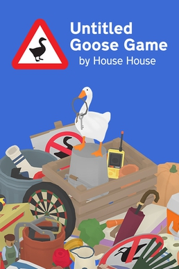

Chrome Dino Game
The Chrome Dino Game was released in 2014 by Google. It appears when users lose internet connection in the Chrome browser. Players control a small dinosaur that runs endlessly, jumping over obstacles like cacti and dodging flying enemies.
Many people describe the game as simple but addictive. It has become an iconic offline pastime and is praised for turning a frustrating situation into something fun.

Untitled Goose Game
Untitled Goose Game was released in 2019 by House House. It is a puzzle-stealth game where players control a mischievous goose causing chaos in a quiet village.
The game received widespread praise for its humor, unique concept, and charming design. Players especially enjoyed the freedom to annoy villagers in creative ways.

Flappy Bird
Flappy Bird was released in 2013 by Dong Nguyen. It is a mobile game where players tap the screen to keep a bird flying between pipes without hitting them.
The game became extremely popular for its difficulty and simplicity. Many players found it frustrating yet addictive, leading to viral success before it was eventually removed.